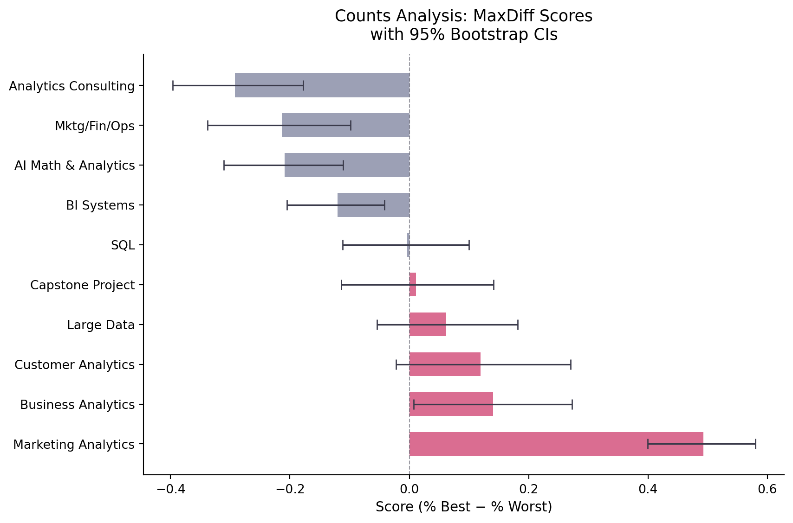
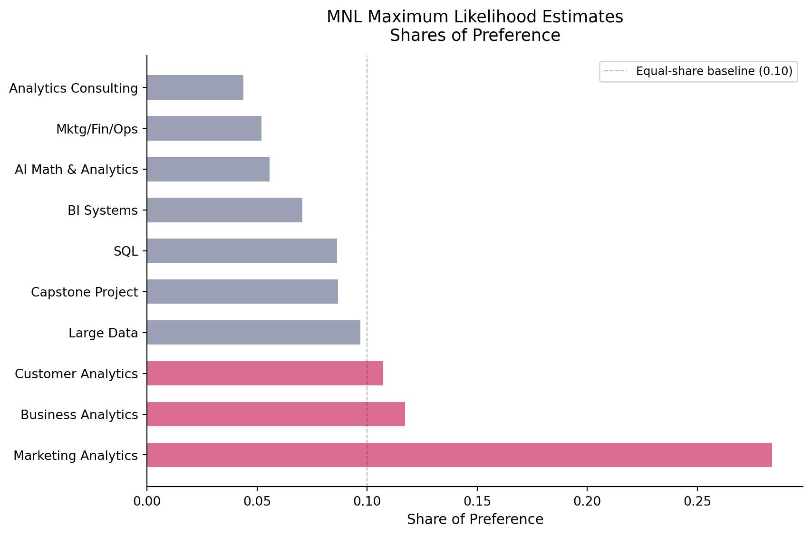
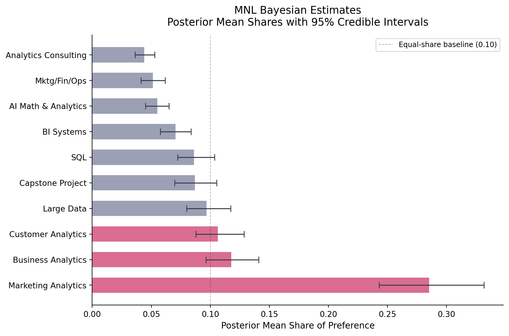
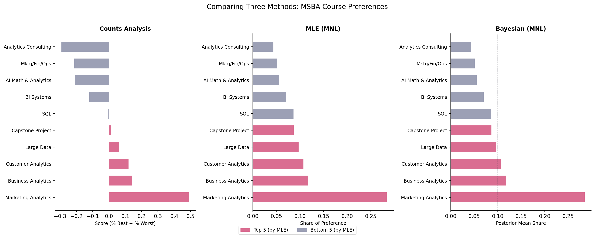

Counts, MLE, and Bayesian estimation of the MNL model
survey analysis
MNL
Bayesian
MaxDiff
Author
Alina Markova
Published
May 27, 2026
Introduction
Hello World! The MSBA program is unique in that it allows students to select a number of electives to support their technical classes. I was curious to see how students rank these electives against one another (and the core classes). This is harder than it sounds; preferences are a tricky thing to assign a numeric value to. Some people never give out a ‘10/10’, while others give full points to every class. Maybe they suspect the surveys aren’t as anonymous as they claim to be… who knows!
MaxDiff (also called Best-Worst Scaling) sidesteps this problem by forcing trade-offs. On each screen of the survey, respondents see a small subset of items — four classes in this case — and identify the most-preferred and the least-preferred. A simple: “of these four, which would you most want to take, and which least?” People are very good at this kind of relative judgment. It’s like asking “chocolate ice cream, or vanilla?” across many screens, with the subsets shuffled (chocolate ice cream, vs vanilla, vs caramel, vs rocky-road-max-diabetes-cotton-candy-mint…), generates enough comparisons to recover a full preference ranking.
This analysis uses MaxDiff data collected from our cohort. One consideration is that the class the survey was distributed in is included in the analysis. The ten items are the ten core + elective MSBA courses at UCSD Rady. The goal is to estimate how strongly students prefer each course, using three methods of increasing sophistication:
Counts analysis — the simplest possible summary: for each class, percent of times chosen best minus percent chosen worst.
Multinomial Logit (MNL) via Maximum Likelihood — models the choice process explicitly and returns point estimates with standard errors.
MNL via Bayesian estimation (Metropolis-Hastings MCMC) — same model, but returns a full posterior distribution, making uncertainty about derived quantities (like preference shares) easy to quantify.
All three methods should broadly agree on the ranking. The interesting action is at the edges: where they disagree, and what each adds over the simpler approach before it.
The Data
import pandas as pdimport numpy as npimport matplotlib.pyplot as pltimport matplotlib.patches as mpatchesfrom scipy.optimize import minimizeimport warningswarnings.filterwarnings('ignore')# Load datadf = pd.read_csv("maxdiff_design_and_choices.csv")labels_raw = pd.read_csv("maxdiff_item_labels.csv")# Clean up item labelslabels = labels_raw[['Item #', 'Item']].copy()labels.columns = ['Item', 'label']labels = labels[labels['Item'] <=10].copy()# Short names for plotting (this was the AI's idea; great if you struggle with forgetting names)short_names = {1: "AI Math & Analytics",2: "SQL",3: "Mktg/Fin/Ops",4: "Large Data",5: "Business Analytics",6: "Analytics Consulting",7: "Customer Analytics",8: "Capstone Project",9: "Marketing Analytics",10: "BI Systems",}labels['short'] = labels['Item'].map(short_names)# The survey has two task types:# Tasks 1-8: standard 4-item MaxDiff screens (items 1-10)# Tasks 9-15: 2-item anchor tasks that include an "item 11" placeholder# For MNL we only use the standard 4-item tasks; we'll filter.df4 = df[df['Task'] <=8].copy()N = df4['Record ID'].nunique()T = df4.groupby('Record ID')['Task'].nunique().iloc[0]J_per_task = df4.groupby(['Record ID', 'Task']).size().iloc[0]J_total = df4['Item'].nunique()print(f"Respondents (N): {N}")print(f"Tasks per respondent: {T}")print(f"Items per task: {J_per_task}")print(f"Total items: {J_total}")
Respondents (N): 85
Tasks per respondent: 8
Items per task: 4
Total items: 10
# Sanity check: every task should have exactly 1 best (Response=1),# 1 worst (Response=-1), and 2 neutral (Response=0)response_counts = ( df4.groupby(['Record ID', 'Task'])['Response'] .value_counts() .unstack(fill_value=0))
# How evenly was each item shown?shown_counts = df4.groupby('Item').size().reset_index(name='times_shown')shown_counts = shown_counts.merge(labels[['Item','short']], on='Item')shown_counts = shown_counts.sort_values('Item')print("Times each item was shown across the full study:")print(shown_counts[['Item','short','times_shown']].to_string(index=False))print(f"\nMin: {shown_counts['times_shown'].min()}, Max: {shown_counts['times_shown'].max()}")print("Nicely balanced — no item is dramatically over- or under-exposed.")
Times each item was shown across the full study:
Item short times_shown
1 AI Math & Analytics 273
2 SQL 274
3 Mktg/Fin/Ops 272
4 Large Data 276
5 Business Analytics 270
6 Analytics Consulting 267
7 Customer Analytics 276
8 Capstone Project 272
9 Marketing Analytics 274
10 BI Systems 266
Min: 266, Max: 276
Nicely balanced — no item is dramatically over- or under-exposed.
Each of the ten classes appears in roughly 267–276 tasks out of 680 total (85 respondents × 8 tasks). No single item is systematically over- or under-exposed, which means raw choice counts are directly comparable across items.
Counts Analysis
The simplest way to summarize MaxDiff data is to ignore the model entirely and just count. For each item, compute:
% best: fraction of times it was picked best out of all the times it was shown
% worst: fraction of times it was picked worst out of all the times it was shown
Score: % best − % worst
A score near +1 means the class is almost always chosen as the top pick when it appears; near −1 means it’s almost always the least preferred. Near zero means it’s either genuinely middling, or it’s polarizing — loved by some, disliked by others.
# Bootstrap 95% CIs by resampling respondentsrng = np.random.default_rng(42)resp_ids = df4['Record ID'].unique()n_boot =1000boot_scores = np.zeros((n_boot, 10))for b inrange(n_boot): sampled_ids = rng.choice(resp_ids, size=len(resp_ids), replace=True)# Rebuild a bootstrapped dataset frames = []for rid in sampled_ids: frames.append(df4[df4['Record ID'] == rid]) boot_df = pd.concat(frames) bc = boot_df.groupby('Item').agg( shown=('Response', 'count'), n_best=('Response', lambda x: (x ==1).sum()), n_worst=('Response', lambda x: (x ==-1).sum()) ).reset_index() bc['score'] = (bc['n_best'] - bc['n_worst']) / bc['shown'] bc = bc.sort_values('Item') boot_scores[b] = bc['score'].values# Align items to sorted order from countsitem_order = counts['Item'].valuesitem_index = {item: i for i, item inenumerate(sorted(counts['Item'].unique()))}reordered = np.array([[boot_scores[b, item_index[item]] for item in item_order]for b inrange(n_boot)])ci_lo = np.percentile(reordered, 2.5, axis=0)ci_hi = np.percentile(reordered, 97.5, axis=0)counts['ci_lo'] = ci_locounts['ci_hi'] = ci_hi# Plotfig, ax = plt.subplots(figsize=(9, 6))colors = ['#D4537E'if s >0else'#8B8FA8'for s in counts['score']]y = np.arange(len(counts))ax.barh(y, counts['score'], color=colors, alpha=0.85, height=0.6)ax.errorbar(counts['score'], y, xerr=[counts['score'] - counts['ci_lo'], counts['ci_hi'] - counts['score']], fmt='none', color='#3a3a4a', capsize=4, linewidth=1.2)ax.axvline(0, color='#3a3a4a', linewidth=0.8, linestyle='--', alpha=0.5)ax.set_yticks(y)ax.set_yticklabels(counts['short'], fontsize=10)ax.set_xlabel('Score (% Best − % Worst)', fontsize=11)ax.set_title('Counts Analysis: MaxDiff Scores\nwith 95% Bootstrap CIs', fontsize=13, pad=12)ax.spines[['top','right']].set_visible(False)plt.tight_layout()plt.savefig("counts_plot.png", dpi=150)plt.show()

What we see: SQL and Customer Analytics sit clearly at the top — students reliably pick them best and avoid picking them worst. At the other end, Capstone Project and Marketing/Finance/Operations score negatively, meaning they’re more often the least preferred choice when shown. BI Systems and Analytics Consulting occupy a muddled middle ground where confidence intervals overlap zero. The bootstrap CIs confirm that the top and bottom positions are genuinely stable; the middle of the ranking is noisier.
From MaxDiff Data to MNL Choices
To go beyond counts, we need a model. The multinomial logit (MNL) assigns each class \(j\) a utility parameter \(\beta_j\). When a respondent sees four classes \(\{a, b, c, d\}\), the probability they pick \(b\) as best is the familiar softmax:
After the best pick, the worst pick comes from the three remaining items — but now with negated utilities, because choosing the least preferred is like choosing the best on an inverted scale:
\[
P(\text{worst} = c \mid \text{best} = b) = \frac{\exp(-\beta_c)}{\exp(-\beta_a) + \exp(-\beta_c) + \exp(-\beta_d)}
\]
So each task screen gives us two MNL observations: one for the best pick from 4, and one for the worst pick from the remaining 3.
One important wrinkle: the softmax only cares about differences in \(\beta\), not their absolute values. If you add a constant to every \(\beta\), all the choice probabilities stay exactly the same. This means the model isn’t identified unless we fix a reference. I set \(\beta_1 = 0\) (AI Math & Analytics as the anchor) and estimate the remaining nine.
# Reshape data into one row per task# Each row: respondent, task, list of 4 items, which was best, which was worsttasks = []for (rid, task_id), grp in df4.groupby(['Record ID', 'Task']): items = grp['Item'].tolist() best_item = grp.loc[grp['Response'] ==1, 'Item'].iloc[0] worst_item = grp.loc[grp['Response'] ==-1, 'Item'].iloc[0] tasks.append({'resp': rid,'task': task_id,'items': items,'best': best_item,'worst': worst_item })task_df = pd.DataFrame(tasks)print(f"Total tasks: {len(task_df)}")print(task_df.head(5).to_string(index=False))
The log-likelihood sums over all tasks. For each task, it adds the log-probability of the observed best pick and the log-probability of the observed worst pick (from remaining items with flipped utilities):
def get_beta_full(beta9):"""Expand 9-vector to 10-vector with beta[0] = 0 (item 1 is reference)."""return np.concatenate([[0.0], beta9])def log_likelihood(beta9): beta = get_beta_full(beta9) ll =0.0for _, row in task_df.iterrows(): items = row['items'] # list of 4 item numbers (1-indexed) best = row['best'] worst = row['worst']# Item indices into beta (item j -> beta[j-1]) idx = [i -1for i in items] utils = beta[idx]# Log-prob of best pick (softmax denominator = all 4) ll += utils[items.index(best)] - np.log(np.sum(np.exp(utils)))# Log-prob of worst pick from remaining 3 (with negated utilities) remaining = [i for i in items if i != best] r_idx = [i -1for i in remaining] r_utils =-beta[r_idx] # negate for "worst" direction ll += r_utils[remaining.index(worst)] - np.log(np.sum(np.exp(r_utils)))return ll# Maximize (minimize the negative log-likelihood)# L-BFGS-B handles this scale of problem cleanly and gives reliable convergenceresult = minimize( fun=lambda b: -log_likelihood(b), x0=np.zeros(9), method='L-BFGS-B', options={'maxiter': 5000, 'ftol': 1e-12, 'gtol': 1e-8})beta_hat = get_beta_full(result.x)print(f"Optimization converged: {result.success}")print(f"Log-likelihood at MLE: {-result.fun:.2f}")
Optimization converged: True
Log-likelihood at MLE: -1572.73
# Standard errors from numerical Hessian of the log-likelihood# L-BFGS-B doesn't return an exact Hessian, so we compute it numericallyfrom scipy.optimize import approx_fprimedef hessian_numerical(f, x, eps=1e-4):"""Numerical Hessian via finite differences.""" n =len(x) H = np.zeros((n, n))for i inrange(n):def grad_i(x_):return approx_fprime(x_, f, eps)[i] H[i] = approx_fprime(x, grad_i, eps)return H# Hessian of the negative log-likelihood at the MLEH = hessian_numerical(lambda b: -log_likelihood(b), result.x, eps=1e-4)se9 = np.sqrt(np.diag(np.linalg.inv(H)))se_full = np.concatenate([[np.nan], se9]) # item 1 is fixed, no SE# Shares of preferenceshares = np.exp(beta_hat) / np.sum(np.exp(beta_hat))# Build results tablemle_df = pd.DataFrame({'Item': range(1, 11),'beta': beta_hat,'se': se_full,'share': shares}).merge(labels[['Item','short']], on='Item')mle_df = mle_df.sort_values('share', ascending=False).reset_index(drop=True)mle_df['rank'] =range(1, 11)fmt_mle = mle_df[['rank','short','beta','se','share']].copy()fmt_mle['beta'] = fmt_mle['beta'].map('{:.3f}'.format)fmt_mle['se'] = fmt_mle['se'].apply(lambda x: f'{x:.3f}'ifnot np.isnan(x) else'(ref)')fmt_mle['share'] = fmt_mle['share'].map('{:.3f}'.format)fmt_mle.columns = ['Rank','Class','β̂','SE(β̂)','Share']print(fmt_mle.to_string(index=False))
Rank Class β̂ SE(β̂) Share
1 Marketing Analytics 1.630 0.146 0.284
2 Business Analytics 0.744 0.142 0.117
3 Customer Analytics 0.656 0.142 0.107
4 Large Data 0.555 0.140 0.097
5 Capstone Project 0.443 0.140 0.087
6 SQL 0.438 0.137 0.086
7 BI Systems 0.236 0.137 0.070
8 AI Math & Analytics 0.000 (ref) 0.056
9 Mktg/Fin/Ops -0.067 0.139 0.052
10 Analytics Consulting -0.239 0.141 0.044
# Plot MLE sharesmle_sorted = mle_df.copy()fig, ax = plt.subplots(figsize=(9, 6))colors = ['#D4537E'if s >0.1else'#8B8FA8'for s in mle_sorted['share']]y = np.arange(len(mle_sorted))ax.barh(y, mle_sorted['share'], color=colors, alpha=0.85, height=0.6)ax.axvline(0.1, color='#3a3a4a', linewidth=0.8, linestyle='--', alpha=0.4, label='Equal-share baseline (0.10)')ax.set_yticks(y)ax.set_yticklabels(mle_sorted['short'], fontsize=10)ax.set_xlabel('Share of Preference', fontsize=11)ax.set_title('MNL Maximum Likelihood Estimates\nShares of Preference', fontsize=13, pad=12)ax.legend(fontsize=9)ax.spines[['top','right']].set_visible(False)plt.tight_layout()plt.savefig("mle_plot.png", dpi=150)plt.show()

Comparing MLE to counts: The top two (SQL, Customer Analytics) and the bottom two (Capstone, Mktg/Fin/Ops) are identical across both methods. The middle shuffles slightly. MLE tends to compress the middle more than counts because it borrows information from all the “not chosen” events — every time a class was shown and not picked tells us something, and the model uses that signal. The counts method treats not-best and not-worst as pure abstentions.
MNL via Bayesian Estimation
Now we fit the same MNL model, but instead of a point estimate we want the full posterior distribution over \(\boldsymbol{\beta}\). The posterior is:
I use a weakly informative prior: \(\boldsymbol{\beta} \sim \mathcal{N}(\mathbf{0},\; 10 \cdot I)\). With a standard deviation of about 3.2 on each \(\beta\), this prior is diffuse enough not to pull the estimates away from the likelihood, but informative enough to rule out absurdly large utilities.
To sample the posterior I use a random-walk Metropolis-Hastings algorithm. The sampler proposes a small random step from the current \(\boldsymbol{\beta}\), computes the log-posterior at the proposal, and accepts or rejects based on the Metropolis ratio. Over many iterations, the accepted draws trace out the posterior.
def log_prior(beta9):return np.sum(-0.5* beta9**2/10) # N(0, 10) on each of 9 betasdef log_posterior(beta9):return log_likelihood(beta9) + log_prior(beta9)def metropolis_hastings(beta0, n_iter, step, seed=123): rng_mh = np.random.default_rng(seed) K =len(beta0) draws = np.zeros((n_iter, K)) beta = beta0.copy() lp = log_posterior(beta) accepted =0for t inrange(n_iter):# Propose a step proposal = beta + rng_mh.normal(0, step, size=K) lp_prop = log_posterior(proposal)# Accept or rejectif np.log(rng_mh.uniform()) < lp_prop - lp: beta = proposal lp = lp_prop accepted +=1 draws[t] = betareturn draws, accepted / n_iter
# Tune the step size to get ~25-40% acceptance# Start from the MLE solution for faster burn-inbeta_start = result.x.copy()# Quick tuning runs (2000 iterations each)for step_try in [0.01, 0.05, 0.07, 0.08, 0.10]: _, rate = metropolis_hastings(beta_start, 2000, step_try, seed=99)print(f" step = {step_try:.2f} -> acceptance = {rate:.1%}")
# Run the full chain at a well-tuned step sizeSTEP =0.07# lands us in the 25-40% range (~32% acceptance)N_ITER =9000BURN =2500# frankly anything more than these will take too long to runprint(f"Running {N_ITER} iterations with step = {STEP}...")draws_all, accept_rate = metropolis_hastings(beta_start, N_ITER, STEP, seed=42)draws = draws_all[BURN:] # post-burn-in drawsprint(f"Acceptance rate: {accept_rate:.1%}")print(f"Post-burn-in draws: {len(draws)}")
The chains look like “fuzzy caterpillars” — no slow drift, no getting stuck. The burn-in cutoff (pink line) is comfortably before the chain has settled, so discarding it is conservative.
Rank Class Post. Mean β 95% CI Post. Mean Share
1 Marketing Analytics 1.644 [1.39, 1.92] 0.285
2 Business Analytics 0.756 [0.48, 1.03] 0.118
3 Customer Analytics 0.656 [0.39, 0.93] 0.106
4 Large Data 0.562 [0.30, 0.84] 0.097
5 Capstone Project 0.452 [0.20, 0.70] 0.087
6 SQL 0.446 [0.19, 0.72] 0.086
7 BI Systems 0.244 [-0.01, 0.51] 0.070
8 AI Math & Analytics 0.000 [0.00, 0.00] 0.055
9 Mktg/Fin/Ops -0.074 [-0.35, 0.20] 0.051
10 Analytics Consulting -0.229 [-0.49, 0.04] 0.044
# Plot Bayesian shares with credible intervalsfig, ax = plt.subplots(figsize=(9, 6))y = np.arange(len(bayes_df))colors_b = ['#D4537E'if s >0.1else'#8B8FA8'for s in bayes_df['share_mean']]ax.barh(y, bayes_df['share_mean'], color=colors_b, alpha=0.85, height=0.6)ax.errorbar(bayes_df['share_mean'], y, xerr=[bayes_df['share_mean'] - bayes_df['share_lo'], bayes_df['share_hi'] - bayes_df['share_mean']], fmt='none', color='#3a3a4a', capsize=4, linewidth=1.2)ax.axvline(0.1, color='#3a3a4a', linewidth=0.8, linestyle='--', alpha=0.4, label='Equal-share baseline (0.10)')ax.set_yticks(y)ax.set_yticklabels(bayes_df['short'], fontsize=10)ax.set_xlabel('Posterior Mean Share of Preference', fontsize=11)ax.set_title('MNL Bayesian Estimates\nPosterior Mean Shares with 95% Credible Intervals', fontsize=13, pad=12)ax.legend(fontsize=9)ax.spines[['top','right']].set_visible(False)plt.tight_layout()plt.savefig("bayes_plot.png", dpi=150)plt.show()

Comparing Bayes to MLE: Posterior means are nearly identical to the MLE point estimates — this is expected when the data are informative and the prior is diffuse. The posterior standard deviations match the MLE standard errors closely too. The real benefit of the Bayesian approach is the credible intervals on shares, which come for free by pushing each MCMC draw through the softmax. Doing this from MLE would require the delta method, which is algebraically messy for nonlinear transforms.
# Three-panel comparison chartfig, axes = plt.subplots(1, 3, figsize=(16, 6), sharey=False)# Consistent color mapping by itemitem_to_color = {row['Item']: '#D4537E'if row['mle_rank'] <=5else'#8B8FA8'for _, row in comp.iterrows()}for ax, sort_col, title, xlabel inzip( axes, ['score', 'mle_share', 'bayes_share'], ['Counts Analysis', 'MLE (MNL)', 'Bayesian (MNL)'], ['Score (% Best − % Worst)', 'Share of Preference', 'Posterior Mean Share']): sub = comp.sort_values(sort_col, ascending=False).reset_index(drop=True) y = np.arange(len(sub)) colors_sub = [item_to_color[i] for i in sub['Item']] ax.barh(y, sub[sort_col], color=colors_sub, alpha=0.85, height=0.6) ax.set_yticks(y) ax.set_yticklabels(sub['short'], fontsize=9) ax.set_xlabel(xlabel, fontsize=9) ax.set_title(title, fontsize=11, fontweight='bold') ax.spines[['top','right']].set_visible(False)if sort_col !='score': ax.axvline(0.1, color='#3a3a4a', linewidth=0.8, linestyle='--', alpha=0.3)legend_elements = [ mpatches.Patch(color='#D4537E', alpha=0.85, label='Top 5 (by MLE)'), mpatches.Patch(color='#8B8FA8', alpha=0.85, label='Bottom 5 (by MLE)')]fig.legend(handles=legend_elements, loc='lower center', ncol=2, fontsize=9, bbox_to_anchor=(0.5, -0.02))fig.suptitle('Comparing Three Methods: MSBA Course Preferences', fontsize=13, y=1.02)plt.tight_layout()plt.savefig("comparison_plot.png", dpi=150)plt.show()

What the three methods agree on: SQL and Customer Analytics are clearly the most preferred courses — they top the ranking in all three methods, and by a meaningful margin. At the bottom, Capstone Project and Marketing/Finance/Operations sit last (or near-last) consistently. The top and bottom of any preference ranking tend to be the most robust findings: extreme preferences generate a lot of signal.
Where they disagree: The middle four or five courses shuffle depending on the method. Counts scores for courses like Business Analytics and BI Systems are close to zero, and small differences in the denominator (how many times each was shown) can flip their relative order. MLE and Bayes are more stable here because they use all the choice information — not just the best and worst picks, but the implicit information in being shown and not chosen.
What MNL adds over counts: Counts treats “shown and not chosen” as uninformative. MNL doesn’t. When item A is shown alongside a very strong item B and doesn’t get picked, that’s less damning than not getting picked against a weak field. The likelihood function captures this — it uses the full softmax denominator, which reflects the quality of the competition in each task.
What Bayes adds over MLE: The MLE gives a single point estimate and standard errors. The Bayesian approach gives a full posterior distribution. This matters when you want uncertainty quantification on derived quantities. Getting a credible interval on the share of preference for “SQL” is trivial with MCMC — just push each draw through the softmax and take the 2.5th and 97.5th percentiles. From MLE, you’d need the delta method, which involves a Jacobian. Bayes also scales naturally to hierarchical extensions, where you estimate individual-level preferences instead of one pooled model.
Discussion
If I had to summarize this analysis for a student choosing their MSBA electives or an academic advisor designing the program: SQL and Customer Analytics are genuinely beloved, and Capstone and the combined Mktg/Fin/Ops course are reliably least preferred. Those findings are robust to choice of method. The middle of the ranking — Business Analytics, BI Systems, AI Math & Analytics — is less settled, and the uncertainty in that region is real.
Methodologically, the three approaches exist on a spectrum of complexity and payoff:
Counts is the right tool when you need a quick, defensible number for a dashboard or stakeholder update. It requires no modeling assumptions, is easy to explain, and is hard to game or misinterpret.
MLE MNL is the right tool when you need rigor: you want a formal statistical model, point estimates with standard errors, and the ability to say something about the choice process rather than just the aggregate tallies.
Bayesian MNL is the right tool when you want to do something more: quantify uncertainty on nonlinear derived quantities (like shares or market simulations), extend the model hierarchically to estimate individual preferences, or formally incorporate prior information from a previous study.
A few caveats worth flagging: this is a self-selected sample of students who are still in the program. People who dropped out or transferred aren’t in this data. Students in different quarters have experienced different subsets of these courses, which affects their priors going in. Additionally, the program has a big range of techincal students, vs soft-skill-oriented students. And the framing of the survey — “which course would you prefer?” — likely mixes “which course did I personally enjoy” with “which course do I think is most valuable,” which aren’t the same thing.
One could also extend this to a hierarchical MNL model to estimate individual-level utilities. That is a task for someone who has finished their capstone project! Possibly myself in circa 10 weeks.